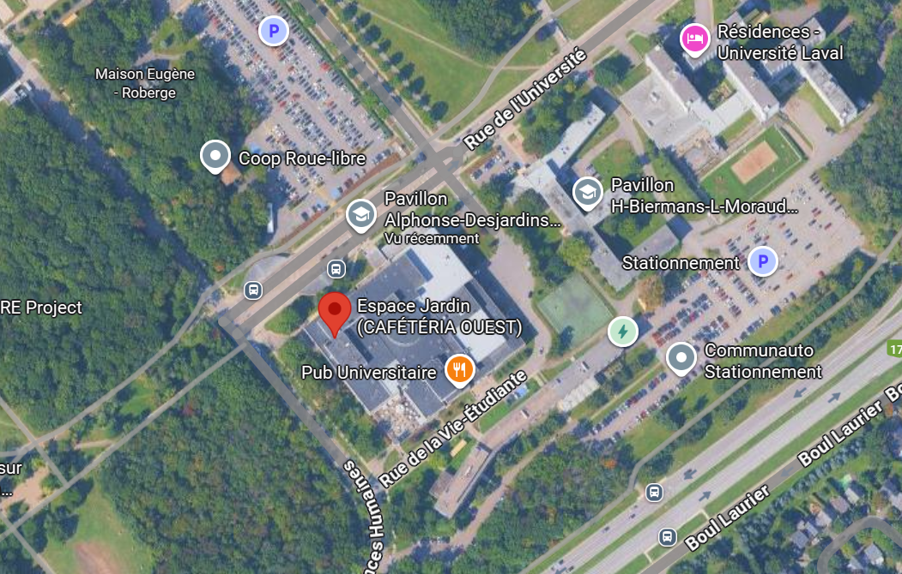

<!--<div class="alert alert-warning text-center">TBA</div>-->


<div class="container">
    <div class="row mt-xs-0 mt-sm-0 mt-md-1 mt-lg-2 mt-xl-3 mb-xs-2 mb-sm-2">
        <div class="col text-muted">


            <p>La journée étudiante Quantact aura lieu le 3 octobre 2025 à l'Université Laval. </p>

            <div class="text-info">Localisation:</div>

            <p> <a href="https://www.sc.ulaval.ca/logistique-et-salles-evenementielles/salles-evenementielles/salle-adj-1440">Espace Jardin (ADJ-1440)</a>, Pavillon Alphonse-Desjardins, Université Laval
2325 Rue de l'Université, Québec, QC G1V 0A6
 <br>
            </p>

            <div class="text-info">Trouver l'endroit:</div>

            <p>En entrant par la porte principale du pavillon Alphonse-Desjardins, dirigez-vous vers le hall central, puis tournez à droite (environ 135 degrés) pour accéder à l’Espace Desjardins. </p>

            


        </div>
    </div>
</div>